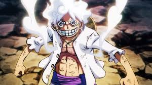
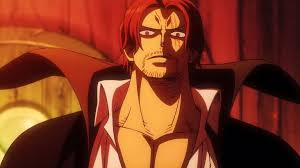
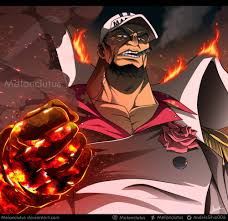
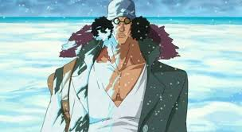
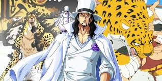
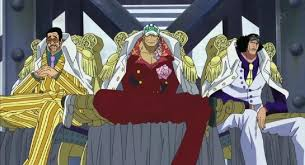
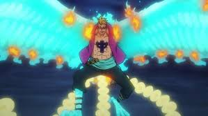

ONE PIECE
¿Que es el One Piece?
Es una serie que actualmente lo mira todo el mundo. Es una de las series mas famosas
por las peleas que tiene y la comedia que hay. La peleas son bantantes y con mucho nivel de diferencia
Lo malo que son 1123 capitulos, y cada capitulo son 20 minutos
Personajes mas fuertes
- Luffy
- Shanks
- Akainu
- Aokiji
- Rob Lucci
 
Hay mas personajes que tienen buen nivel de fuerza pero estos son son algunos de los mas destacados
Tipos de poderes
Los poderes se basan en tres tipos
- Tipo Logia
- Tipo Zoan
- Tipo Paramecia
La logia significa que si te disparan o te meten algo transpasa tu cuerpo
La zoan son poderes tipo animal
La para mecia son los poderes normales con otros efectos
